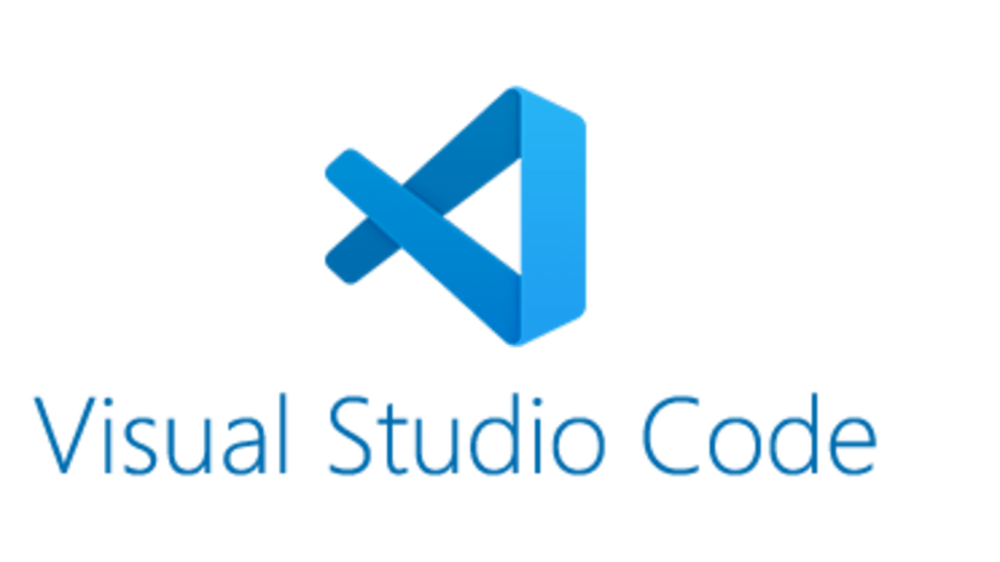
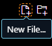
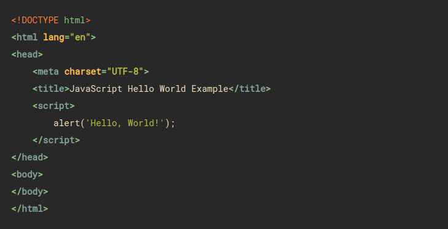
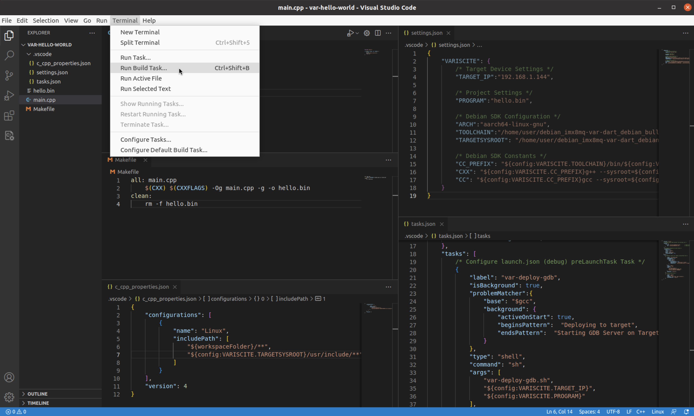
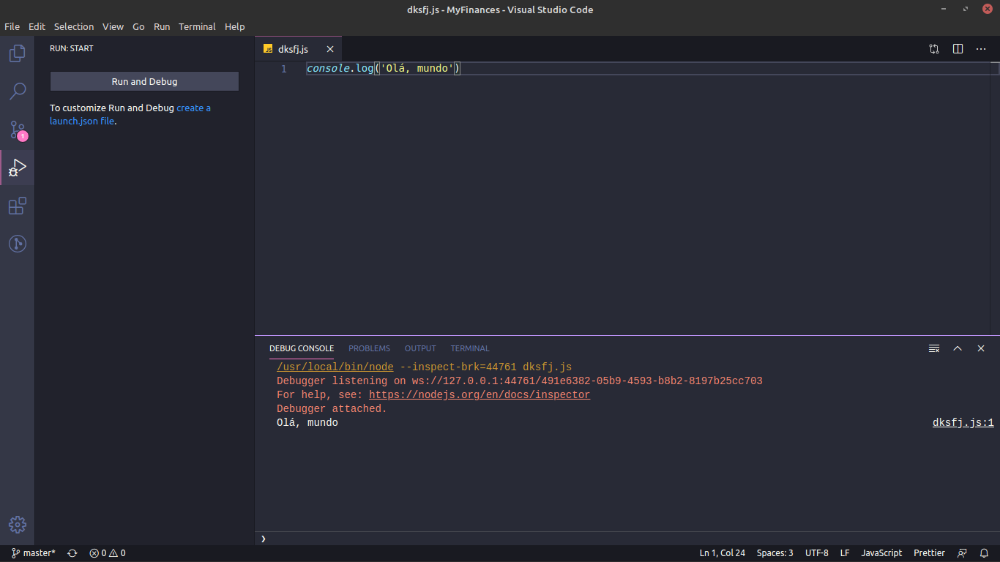

Instale o Visual Studio Code em seu computador. Ele é um editor de código leve e poderoso.
Abra o Visual Studio Code e crie um novo arquivo JavaScript. Clique em "File" > "New File" e salve-o com a extensão ".js".
Escreva seu código JavaScript no arquivo recém-criado. Você pode começar com um simples "Hello World" ou qualquer código que desejar.
Para executar seu código JavaScript, pressione "Ctrl" + "Shift" + "B" ou clique em "Terminal" > "Run Build Task" no Visual Studio Code.
A saída do seu código será exibida no terminal do Visual Studio Code. Verifique se não há erros e observe o resultado do seu programa.
Feito por Roger